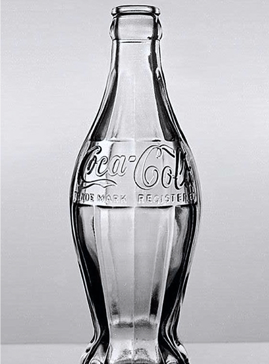

Un'icona senza tempo...
Verso il 1915, la Coca-Cola dovette affrontare un problema crescente: la popolarità della bevanda aveva generato innumerevoli imitazioni da parte di concorrenti che utilizzavano bottiglie quasi identiche. Per proteggere il brand, l’azienda decise di commissionare una bottiglia che fosse riconoscibile non solo alla vista, ma anche al tatto, permettendo a chiunque di identificarla persino al buio o se ridotta in frantumi. Fu indetto un concorso tra diverse vetrerie americane, con l’obiettivo di creare un design unico e distintivo come una moneta.
La vittoria andò alla Root Glass Company di Terre Haute, nell’Indiana. Il team guidato da Alexander Samuelson e dal designer Earl R. Dean cercò ispirazione negli ingredienti della bevanda. Mentre consultavano un’enciclopedia, si imbatterono nell’illustrazione della fava di cacao, caratterizzata da una forma allungata e da profonde scanalature longitudinali. Sebbene il cacao non fosse un ingrediente della Coca-Cola, il design fu ritenuto perfetto. Il prototipo originale del 1915 era molto più bombato al centro rispetto alla versione che conosciamo oggi, rendendo difficile l’imbottigliamento dell’epoca.

1916, Terre Haute (Indiana).